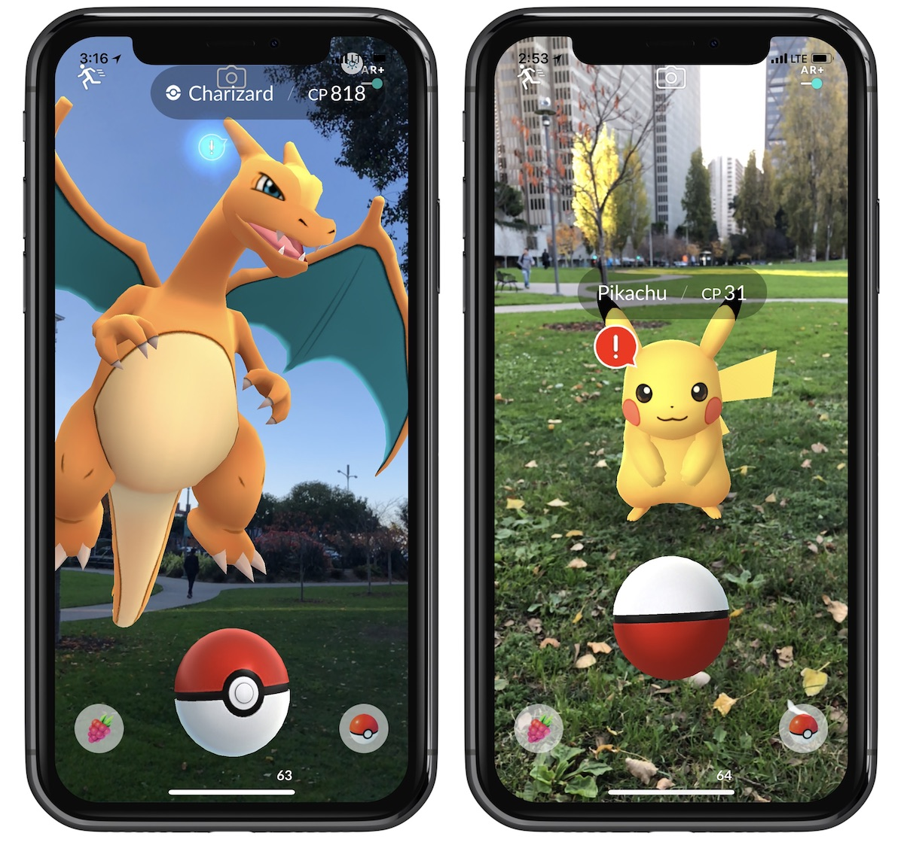
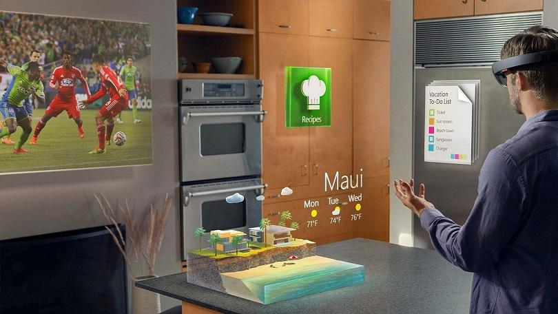

Augmented Reality
In the Browser
Created by Paul Hutson / @paulhutson
What is AR?
Use Cases
Advertising
Games

Head Up Displays

Small Displays
Google Glass

Small Displays
Recon

Education

Augmented Faces on Video
More exposure...
iOS - ARKit...
iOS ARKit
Microsoft Hololens

AR Glasses

Positioning Items in the View
AR Markers

Face Tracking

Geo Tracking

Object Tracking

Really.. tracking everything you can think of...
The Browser
That's right.. IN YOUR BROWSER!!!
Code Time...
... what are you going to need?
A Webcam (or a device with a camera on it)
An AR Marker (for the basic example)
Three.JS
AR.JS
Example Code
Include the relevant scripts / meta information
Create a three.js renderer
// Init renderer
var renderer = new THREE.WebGLRenderer({
antialias: true,
alpha: true
});
renderer.setClearColor(new THREE.Color('lightgrey'), 0)
renderer.setSize( 640, 480 );
renderer.domElement.style.position = 'absolute'
renderer.domElement.style.top = '0px'
renderer.domElement.style.left = '0px'
// Add the renderer to the document
document.body.appendChild( renderer.domElement );
// Array of functions for the rendering loop
var onRenderFcts= [];
Add a new three.js scene and camera
// init scene and camera
var scene = new THREE.Scene();
// Create a camera
var camera = new THREE.Camera();
scene.add(camera);
Declare the ar.js ArToolkitSource...
var arToolkitSource = new THREEx.ArToolkitSource({
sourceType : 'webcam' // Note, you could use an image or a embedded video for this too.
})
Initialise the toolkit... and get ready for frames
// initialise it
arToolkitContext.init(function onCompleted(){
// copy projection matrix to camera
camera.projectionMatrix.copy( arToolkitContext.getProjectionMatrix() );
})
// update artoolkit on every frame
onRenderFcts.push(function(){
if( arToolkitSource.ready === false ) return
arToolkitContext.update( arToolkitSource.domElement )
// update scene.visible if the marker is seen
scene.visible = camera.visible
})
Add marker controls
// init controls for camera
var markerControls = new THREEx.ArMarkerControls(arToolkitContext, camera, {
type : 'pattern',
patternUrl : THREEx.ArToolkitContext.baseURL + 'data/patt.hiro',
changeMatrixMode: 'cameraTransformMatrix'
})
// as we do changeMatrixMode: 'cameraTransformMatrix', start with invisible scene
scene.visible = false
Create a 3D Object to display
// Create a cube and add it to the scene
var geometry = new THREE.CubeGeometry(1,1,1);
var material = new THREE.MeshNormalMaterial({
transparent : true,
opacity: 0.5,
side: THREE.DoubleSide
});
var mesh = new THREE.Mesh( geometry, material );
mesh.position.y = geometry.parameters.height/2
scene.add( mesh );
Render the scene
// render the scene
onRenderFcts.push(function(){
renderer.render( scene, camera );
})
Finally start the animation
// run the rendering loop
var lastTimeMsec= null
requestAnimationFrame(function animate(nowMsec){
// keep looping
requestAnimationFrame( animate );
// measure time
lastTimeMsec = lastTimeMsec || nowMsec-1000/60
var deltaMsec = Math.min(200, nowMsec - lastTimeMsec)
lastTimeMsec = nowMsec
// call each update function
onRenderFcts.forEach(function(onRenderFct){
onRenderFct(deltaMsec/1000, nowMsec/1000)
})
})
Seeing it Work
Other Examples
Questions?
Thank You
Paul Hutson / Twitter: @paulhutson